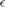

Construct ETDF gains for asymptotic parameters and compute true stability
Calling sequence
function [pcor,spec,gains,Ksmooth]=etdf_control(oderhs,branch,...)
The function returns the control gains as constructed by Brunovsky'69 to assign the spectrum of a periodic orbit of a ODE with feedback control. It also returns the the true spectrum and the remeshed point (since the method works only approximately for periodic gain functions, the true spectrum may differ from the assigned spectrum). Details can be found in
Sieber: Generic stabilisability for time-delayed feedback control, Preprint download at http://arxiv.org/abs/1508.05671
The function requires access to standard ddebiftool routines dde_set_options df_deriv p_correc psol_eva psol_jac set_funcs as available from DDE-Biftool version 3.1:
https://sourceforge.net/projects/ddebiftool/files/dde_biftool_v3.1.zip/download
Contents
- Inputs
- Outputs:
- Optional inputs (name-value pairs)
- shift periodic orbit such that control is applied at time 0 and remesh
- correct new point pt to periodic solution of discretised problem
- compute monodromy matrix P0 and linearized input b0
- choose gains to assign spectrum approximately
- if lambda is not given, place eigenvalues on a circle
- compute true Floquet multipliers for ETDF system
- condensate
Inputs
- oderhs: user-defined right-hand side of ODE for controlled system, of the form
function y=oderhs(x,p,u)
where x and y are n dimensional, control input u is one-dimensional and p are additional system parameters. * branch: a branch of periodic orbits as computed by DDE-Biftool
Outputs:
- pcor (point of kind 'psol'): remeshed periodic orbit (again corrected with Newton iteration for new mesh)
- spec ((2 n nint m) x 1 array): eigenvalues of periodic orbit with ETDF
- gains (n x 1 array): gains constructed as suggested by Brunovsky
- Ksmooth (function K=Ksmooth(x)) function that returns gains along orbit (u(t)=Ksmooth(x(t))[xtilde(t)-x(t)]
Optional inputs (name-value pairs)
- 'point' (default 1): point number selecting orbit along the branch
- 'delta' (default 1e-2): approximate length of interval relative to period where feedback control is applied
- 'epsilon' (default 1e-2): parameter  in the recursion for extended time-delayed feedback
- 't' (default 0): time at which control is applied (x(t), approximately until x(t+delta))
- 'rho' (default 0.1): gain K(x) is ensured to be 0 further than rho away from x(t)
- 'lambda' (vector of n complex numbers): values to which eigenvalues are assigned by Brunovsky's method (if not given, they are placed on the circle of radius (1-epsilon)/2)
- 'n0' (default 30): number of mesh points in [delta+delta_change,1-delta_change]
- 'n1' (default 30): number of mesh points in [0,delta]
- 'n_change' (default 10): number of mesh points in [delta,delta+delta_change] and [1-delta_change,1]
- 'delta_change' (default delta/10): length of intervals where gains transition from their non-zero value back to zero.
- 'x_vectorized' (default true): can oderhs called with arrays x of shape (n x nvec) and u of shape (1 x nvec)?
function [pcor,spec,gains,Ksmooth]=etdf_control(oderhs,branch,varargin)
default={'point',1,'delta',1e-2,'epsilon',1e-2,'rho',0.1,...
'lambda',[],'n0',30,'n1',30,'n_change',10,'delta_change',[],'t',0,...
'x_vectorized',true,'hjac',1e-6};
options=dde_set_options(default,varargin,'pass_on');
if isempty(options.delta_change)
options.delta_change=options.delta/10;
end
pt0=branch.point(options.point);
deg=pt0.degree;
delta=options.delta;
dc=options.delta_change;
t0=options.t;
shift periodic orbit such that control is applied at time 0 and remesh
(mesh is otherwise uniform)
mesh1=linspace(t0,t0+delta,options.n1*deg+1); mesh_down=linspace(t0+delta,t0+delta+dc,options.n_change*deg+1); mesh0=linspace(t0+delta+dc,t0+1-dc,options.n0*deg+1); mesh_up=linspace(t0+1-dc,t0+1,options.n_change*deg+1); mesh=[mesh1,mesh_down(2:end),mesh0(2:end),mesh_up(2:end)]; xprof=psol_eva(pt0.profile,pt0.mesh,mesh,pt0.degree); pt1=pt0; pt1.profile=xprof; pt1.mesh=mesh-mesh(1); pt1.mesh(end)=1;
correct new point pt to periodic solution of discretised problem
mth=branch.method.point; mth.adapt_mesh_after_correct=0; mth.adapt_mesh_before_correct=0; funcs=set_funcs(... 'sys_rhs',@(xx,p)etdf_controlled_rhs(xx,p,oderhs),... 'sys_tau',@()[],... 'x_vectorized',options.x_vectorized); warning('off','p_correc:nonsquare'); [pcor,suc]=p_correc(funcs,pt1,branch.parameter.free,[],mth,0,pt1,0); warning('on','p_correc:nonsquare'); assert(suc);
compute monodromy matrix P0 and linearized input b0
J=psol_jac(funcs,[],pcor.period,pcor.profile,pcor.mesh,pcor.degree,... pcor.parameter,[],0,'wrapJ',false); [Q,Racc]=condensation(pcor,J); P0=Q*Racc; b0=df_deriv(struct('sys_rhs',@(xx,u)oderhs(xx,pcor.parameter,u)),pcor.profile(:,1),0,... [],1,[],options.hjac); nx=length(b0);
choose gains to assign spectrum approximately
lambda=options.lambda;
if isempty(lambda)
if lambda is not given, place eigenvalues on a circle
angles=linspace(0,2*pi,nx+1);
angles=angles(1:end-1);
if floor(nx/2)*2==nx
angles=angles+angles(2)/2;
end
lambda=(1-options.epsilon)*exp(1i*angles)/2;
end
gains=SpecExpAssign(P0,-b0,lambda);
assert(all(abs(eig(P0*expm(-b0*gains)))<1-options.epsilon));
compute true Floquet multipliers for ETDF system
pext=pcor; T=pext.period; pext.parameter(end+1)=T; x0=pcor.profile(:,1); y0=oderhs(x0,pcor.parameter,0)*T; Ksmooth=@(x)gain_of_x(x,gains/T,x0,y0,options.delta,options.delta_change,options.rho); pext.profile=[pext.profile;pext.profile]; etdf_funcs=set_funcs(... 'sys_rhs',@(xx,p)etdf_controlled_rhs(xx,p(1:end-1),oderhs,'K',Ksmooth,'epsilon',options.epsilon),... 'sys_tau',@()length(pext.parameter),... 'x_vectorized',options.x_vectorized); spec=ext_eig(etdf_funcs,pext,options.epsilon);
end
function [Q,Racc,J]=condensation(point,J)
condensate
deg=point.degree; nint=(length(point.mesh)-1)/deg; ndim=size(point.profile,1); Q=eye(ndim); Racc=eye(ndim); for k=1:nint ind=(k-1)*ndim*deg; M=J(ind+(1:ndim*deg),ind+(1:ndim*(deg+1))); Minv=M(:,ndim+1:end)\(-M(:,1:ndim)); A=Minv(end-ndim+1:end,:); B=A*Q; [Q,R]=qr(B); Racc=R*Racc; end
end
function ev=ext_eig(funcs,pt,epsilon) [n,nt]=size(pt.profile); nx=n/2; xrg=1:nx; trg=nx+xrg; J=psol_jac(funcs,[],... pt.period,pt.profile,pt.mesh,pt.degree,pt.parameter,[],false,... 'wrapJ',false,'Dtmat',diag([ones(nx,1);zeros(nx,1)]),'bc',false); Jr=reshape(J,[n,nt-1,n,2*nt-1]); Jrxx=Jr(xrg,:,xrg,:); Jrxt=Jr(xrg,:,trg,:); Jrtx=0*Jr(trg,:,xrg,:); Jrtt=0*Jr(trg,:,trg,:); for i=1:nt-1 Jrtt(xrg,i,xrg,i+1)=-(1-epsilon)*eye(nx); Jrtx(xrg,i,xrg,i+1)=-epsilon*eye(nx); Jrtt(xrg,i,xrg,nt+i)=eye(nx); end J2=reshape(cat(1,cat(3,Jrxx,Jrxt),cat(3,Jrtx,Jrtt)),size(J)); [s1,s2]=size(J2); n_ext=s2-s1; M0=-J2(:,n_ext+1:end)\J2(:,1:n_ext); M=[zeros(n_ext-s1,s1),eye(n_ext-s1);M0]; ev=eig(M); [~,ix]=sort(abs(ev),'descend'); ev=ev(ix); end